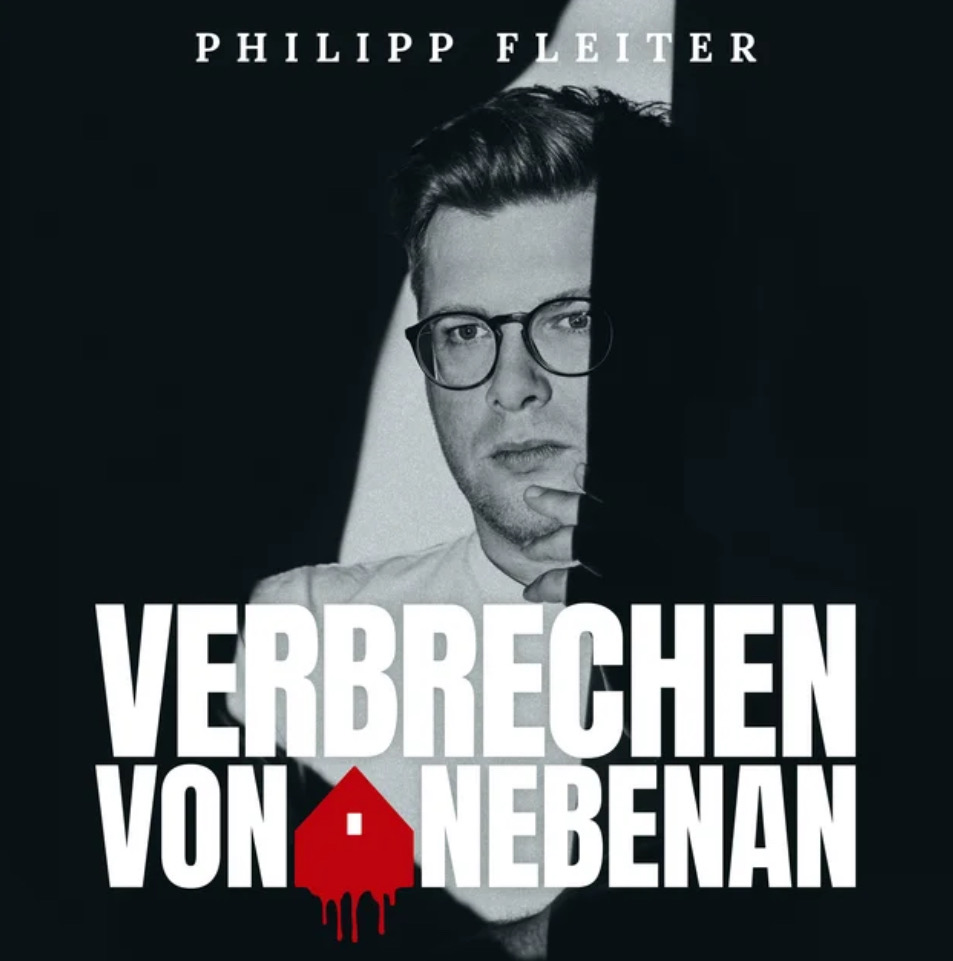
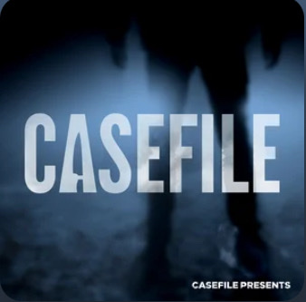

True Crime
Was ist True Crime?
Definition von True Crime:
True Crime Podcasts sind Audioinhalte, die sich auf die Darstellung und Diskussion von realen Kriminalfällen konzentrieren. Diese Podcasts decken oft Verbrechen, Ermittlungen, Gerichtsverfahren und die Hintergründe von echten kriminellen Ereignissen ab. Sie können verschiedene Formate haben, darunter Erzählungen, Interviews mit Experten oder Beteiligten, und dienen dazu, das Interesse der Zuhörer an echten Kriminalgeschichten zu wecken.
Woher kommen True Crime Podcasts - Die Geschichte dahinter:
True Crime Podcasts haben ihren Ursprung im wachsenden Interesse der Menschen an realen Kriminalfällen. Der Boom dieser Podcasts begann in den letzten Jahren, als Podcasts als Medium an Popularität gewannen. Die Faszination für True Crime liegt oft in der Möglichkeit, tiefer in die Details echter Verbrechen einzutauchen und die Facetten von Ermittlungen sowie juristischen Prozessen zu verstehen. Podcaster, Journalisten und Kriminalexperten haben diese Nachfrage bedient, indem sie True Crime Podcasts produzieren und Geschichten von echten Kriminalfällen präsentieren. Die Geschichte der True Crime Podcasts reicht zurück bis in die frühen Tage des Podcasting, aber der Boom begann in den letzten Jahren. Einer der Wegbereiter war der Podcast “Serial” im Jahr 2014, der sich intensiv mit einem Mordfall auseinandersetzte. Dieser Podcast wurde äußerst erfolgreich und trug dazu bei, das Interesse an True Crime Podcasts zu wecken. Seitdem haben viele andere Podcaster begonnen, echte Kriminalfälle zu erforschen und Geschichten darüber zu erzählen. Die Faszination für True Crime geht oft mit dem Bedürfnis der Zuhörer einher, tiefer in die Psyche von Tätern einzutauchen, die Dynamik von Ermittlungen zu verstehen und mehr über das komplexe Gefüge von Verbrechen zu erfahren. Diese Podcasts bieten eine Möglichkeit, sich in die Welt der Kriminalistik zu vertiefen, ohne das eigene Zuhause zu verlassen.
Wer hört Podcast:
Die Mehrheit der Hörer:innen von True Crime ist weiblich (93%). Viele Hörer:innen von True-Crime-Podcasts sind sich in bestimmten Merkmalen sehr ähnlich. So sind die meisten zwischen 20 und 29 Jahren alt, höher gebildet und interessieren sich für Themen wie Nachhaltigkeit, Reisen, finanzielle Unabhängigkeit, Ernährung, Gesundheit, Kosmetik und Politik. Religion und Glaube scheint hingegen weniger wichtig. Ganze 62 % der Hörer:innen lauschen ihren Podcasts (im Schnitt übrigens drei True Crime Podcasts) täglich. Knapp 90 % hören dabei jede einzelne Folge ihrer Lieblingspodcasts.
Wer produziert True Crime Podcasts?
Die meisten Podcasts selbst werden von Frauen gemacht. Unter 15 beliebten Podcasts, wie Mord auf Ex, Serienkiller - Mörder und ihre Geschichten oder Puppies an Crime, sind nur zwei rein männlich besetzt.
Auf Deutsch:
- Zeit Verbrechen: Ein Podcast des Magazins “Die Zeit”, der sich mit verschiedenen Kriminalfällen auseinandersetzt.
- Mordlust: Moderiert von zwei Journalistinnen, beschäftigt sich dieser Podcast mit verschiedenen Kriminalfällen und hat eine lockere, unterhaltsame Präsentationsweise.
- Verbrechen von nebenan: Dieser Podcast widmet sich Kriminalfällen, die sich in unmittelbarer Nähe der Zuhörer ereignet haben. 
- Die Spur der Täter: Ein Podcast, der sich auf spektakuläre und ungelöste Kriminalfälle konzentriert.
- Cold Case - Wahre Verbrechen, echte Detektive: Beschäftigt sich mit ungelösten Fällen und den Anstrengungen, sie aufzuklären.


Auf Englisch:
- Serial: Einer der bahnbrechenden Podcasts, der mit der vertieften Untersuchung von Kriminalfällen begann und das True Crime Podcast-Genre populär machte.
- My Favorite Murder: Ein beliebter Podcast, in dem die Gastgeber humorvoll über verschiedene Kriminalfälle sprechen.
- Criminal: Ein Podcast, der sich mit verschiedenen kriminellen Geschichten aus der ganzen Welt befasst, oft mit ungewöhnlichen oder faszinierenden Aspekten.
- Casefile: Ein anonymer Erzähler untersucht echte Kriminalfälle, von Morden bis zu anderen schweren Verbrechen. 
- Sword and Scale: Ein Podcast, der sich auf True Crime-Fälle konzentriert, oft mit Audioclips aus den Ermittlungen.
- Crime Junkie: Zwei Freundinnen diskutieren und erforschen True Crime-Fälle, von ungeklärten Morden bis hin zu Serienverbrechern.


Die beliebtesten True Crime Podcasts:
Auf Deutsch:
- Mord auf Ex
- Mordlust
- Weird Crimes
- Zeit Verbrechen
- Verbrechen von nebenan. True Crime aus der Nachbarschaft

Auf Englisch:
- The Kids of Rutherford County
- Crime Junkie
- Dark Arenas
- RUN, FOOL!
- Rotten Mango

Unser Meinung nach die besten True Crime Podcasts: